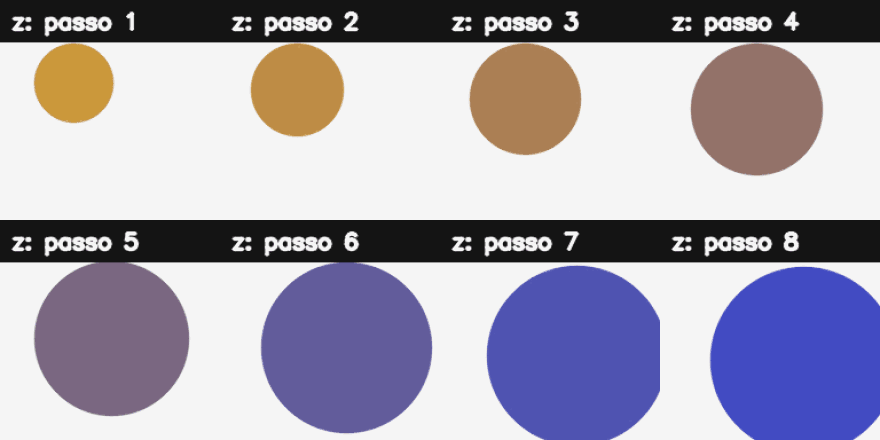

17. Redes Adversárias Generativas (GANs)¶
O que você aprenderá¶
Neste capítulo, você aprenderá a compreender GANs como um jogo de otimização entre duas redes, e não apenas como uma ferramenta para “criar imagens”. Estudaremos gerador, discriminador, espaço latente, treinamento alternado, instabilidade e avaliação.
Ao final, deverá conseguir:
- diferenciar modelo discriminativo e generativo;
- explicar o papel do gerador;
- explicar o papel do discriminador;
- interpretar o jogo minimax clássico;
- compreender espaço latente;
- gerar interpolações entre vetores latentes;
- explicar treinamento alternado;
- compreender por que o discriminador não deve dominar completamente;
- explicar mode collapse;
- compreender a ideia de DCGAN;
- diferenciar convolução transposta de “inversa perfeita”;
- reconhecer artefatos de upsampling;
- discutir fidelidade e diversidade;
- compreender FID em alto nível;
- discutir riscos e uso responsável de dados e saídas sintéticas.
GANs foram propostas por Goodfellow et al. (2014) como uma estrutura adversarial em que um gerador aprende a produzir amostras e um discriminador aprende a distingui-las dos dados reais.
17.1 Modelo discriminativo versus generativo¶
Um classificador tradicional aprende algo como:
Um modelo generativo busca aprender características da distribuição dos dados de modo que possa produzir novas amostras.
Analogia¶
Reconhecer pinturas de um artista é diferente de aprender a produzir novas pinturas com características estatisticamente semelhantes ao conjunto observado.
17.2 As duas redes¶
Gerador G¶
Recebe um vetor latente z:
Discriminador D¶
Recebe uma amostra e produz um escore:
17.3 Analogia do falsificador e do perito¶
Imagine:
- gerador = falsificador;
- discriminador = perito.
No início, o falsificador produz cópias ruins. O perito as identifica facilmente. A cada rodada, o falsificador recebe informação indireta sobre como melhorar.
A analogia ajuda, mas há uma diferença importante: as redes são funções diferenciáveis treinadas por gradientes.
17.4 Função minimax clássica¶
A formulação original é:
(GOODFELLOW et al., 2014).
Intuitivamente:
Dquer atribuir valor alto a reais e baixo a falsas;Gquer produzir amostras queDconsidere reais.
17.5 O espaço latente¶
z é normalmente amostrado de uma distribuição simples:
O gerador aprende uma transformação desse espaço para o espaço das imagens.
Analogia: painel de controles escondido¶
Imagine um painel com vários controles sem rótulo. À medida que o modelo aprende, diferentes direções no painel podem corresponder a mudanças de aparência, posição, textura ou outras características.
17.6 Latente não significa automaticamente interpretável¶
Não podemos assumir que:
A representação emerge do treinamento e pode ser altamente distribuída.
Algumas arquiteturas e objetivos buscam maior disentanglement, mas isso não é garantido numa GAN comum.
17.7 Interpolação no espaço latente¶
Dados dois vetores:
podemos interpolar:
Se o espaço aprendido for suave, as amostras podem mudar gradualmente.
17.8 Exemplo didático sem GAN treinada¶
Para tornar a ideia visual sem depender de treino pesado, podemos mapear componentes de z manualmente para propriedades de uma forma:
x = int(100 + 80 * np.tanh(z[0]))
y = int(100 + 80 * np.tanh(z[1]))
raio = int(20 + 15 * sigmoid(z[2]))
Esse exemplo não é uma GAN. Ele apenas demonstra que um vetor contínuo pode controlar uma saída visual contínua.
17.9 Como o discriminador aprende?¶
Um lote de treino pode conter:
O discriminador é atualizado para separar os dois grupos.
Se ele ficar perfeito muito cedo, o gerador pode receber gradientes pouco úteis, dependendo da formulação usada.
17.10 Como o gerador aprende?¶
Durante a atualização do gerador:
O gradiente atravessa D até G, mas os pesos do discriminador não são atualizados nessa etapa.
Analogia¶
O perito permanece temporariamente fixo enquanto o falsificador tenta melhorar especificamente contra os critérios atuais dele.
17.11 Treinamento alternado¶
Ciclo didático:
1. amostrar reais
2. amostrar z
3. gerar falsas
4. treinar D em reais/falsas
5. amostrar novo z
6. congelar atualização de D
7. treinar G através de D
8. repetir
O equilíbrio entre as duas redes é um dos desafios centrais.
17.12 Por que GANs são instáveis?¶
As duas funções mudam ao mesmo tempo.
É diferente de otimizar uma única loss estacionária: o “adversário” também aprende.
Problemas possíveis:
- gradientes fracos;
- oscilação;
- discriminador dominante;
- gerador dominante temporariamente;
- mode collapse.
17.13 Mode collapse¶
O gerador descobre poucas amostras que enganam o discriminador e passa a repetir variações muito semelhantes.
Analogia: aluno que aprende uma resposta perfeita¶
Se a prova cobra assuntos variados, responder sempre uma única questão perfeitamente não representa domínio do conteúdo.
Uma GAN deve buscar qualidade e diversidade.
17.14 Fidelidade versus diversidade¶
Fidelidade¶
As amostras individuais parecem plausíveis?
Diversidade¶
O gerador cobre diferentes modos do conjunto de dados?
Um modelo pode produzir uma única imagem extremamente convincente e ainda ser um gerador ruim.
17.15 DCGAN¶
DCGAN popularizou boas práticas convolucionais para geração de imagens.
Estrutura didática do discriminador:
Estrutura do gerador:
17.16 Convolução transposta¶
Conv2DTranspose aumenta resolução por uma operação convolucional aprendível.
Ela não é a inversa matemática perfeita de uma convolução comum.
Exemplo Keras¶
17.17 Artefatos quadriculados¶
Combinações de kernel e stride em convoluções transpostas podem produzir padrões repetitivos.
Uma alternativa é:
Compare visualmente e por métricas.
17.18 Normalizações e ativações¶
Arquiteturas GAN usam escolhas cuidadosas de:
- normalização;
- ativação;
- inicialização;
- taxa de aprendizado;
- otimizador.
Essas decisões afetam estabilidade. Não copie uma arquitetura parcialmente sem compreender o conjunto de escolhas de treinamento.
17.19 Loss do discriminador não é uma métrica de qualidade visual¶
Uma loss aparentemente “equilibrada” não garante imagens boas.
Da mesma forma:
- D com 50% de acerto não significa necessariamente convergência ideal;
- G com loss baixa não prova diversidade.
Sempre examine amostras e métricas adequadas.
17.20 FID em alto nível¶
FID compara estatísticas de features extraídas de conjuntos reais e gerados.
Em termos gerais, quanto menor, mais próximas estão as distribuições nessas representações.
Mas FID depende de:
- quantidade de amostras;
- domínio;
- implementação;
- pré-processamento.
Não compare valores calculados em condições diferentes como se fossem diretamente equivalentes.
17.21 Avaliação visual também possui viés¶
Mostrar apenas as melhores 20 imagens de 100 mil gera uma impressão enganosa.
Avaliação deve usar:
- amostras aleatórias;
- quantidade suficiente;
- métricas;
- inspeção de diversidade;
- análise de falhas.
17.22 Memorização¶
Um gerador pode reproduzir ou aproximar excessivamente amostras do treinamento.
Isso é particularmente relevante com datasets pequenos ou conteúdo sensível.
Avaliações de similaridade e políticas de dados são importantes em aplicações reais.
17.23 Uso responsável¶
Projetos generativos devem considerar:
- origem e licença dos dados;
- consentimento quando aplicável;
- vieses do conjunto;
- risco de reproduzir conteúdo sensível;
- transparência sobre origem sintética;
- possibilidade de uso enganoso.
Uma imagem gerada não deve ser apresentada como registro documental de um evento real.
17.24 Exemplo integrado do capítulo¶
O código do capítulo 17 mantém uma parte autocontida para visualizar espaço latente e, opcionalmente, monta arquiteturas Keras.
Pipeline:
z1 e z2
↓
interpolações
↓
função visual didática
↓
painel latente
↓
gerador Keras opcional
↓
discriminador opcional
↓
contagem de parâmetros

17.25 Erros comuns¶
| Sintoma | Causa provável | Correção |
|---|---|---|
| gerador produz quase tudo igual | mode collapse | revisar objetivo/treino/dados |
| discriminador perfeito rapidamente | desequilíbrio | ajustar treinamento |
| artefatos em grade | upsampling transposto | testar resize+conv |
| loss parece boa, imagens ruins | loss não mede qualidade visual | avaliar amostras/métricas |
| FID comparado entre setups diferentes | protocolo inconsistente | padronizar avaliação |
| pouca variedade no dataset | cobertura insuficiente | revisar dados |
| amostras parecem treino | possível memorização | investigar similaridade |
17.26 Perguntas de revisão¶
- Qual diferença existe entre modelo discriminativo e generativo?
- O que recebe o gerador?
- O que o discriminador tenta aprender?
- O que é espaço latente?
- Por que interpolação é interessante?
- Como o gradiente chega ao gerador?
- O que é mode collapse?
- Qual diferença existe entre fidelidade e diversidade?
- Conv2DTranspose é uma inversa perfeita?
- Por que loss isolada não basta para avaliar GAN?
Exercícios de fixação¶
Exercício 1¶
Gere dois vetores latentes de dimensão 8 e produza 10 interpolações lineares.
Exercício 2¶
Mapeie dois componentes do vetor para posição (x,y) de um círculo e visualize a trajetória.
Exercício 3¶
Mapeie outro componente para raio e outro para intensidade de cor.
Exercício 4¶
Explique por que esse mapeamento manual não é uma GAN treinada.
Exercício 5¶
Desenhe o fluxo de gradiente na atualização do discriminador.
Exercício 6¶
Desenhe o fluxo de gradiente na atualização do gerador.
Exercício 7¶
Explique o que aconteceria se o discriminador sempre retornasse 1 para reais e 0 para falsas desde o primeiro passo.
Exercício 8¶
Crie um exemplo conceitual de mode collapse com três classes visuais.
Exercício 9¶
Compare a quantidade de parâmetros de um pequeno gerador e discriminador Keras.
Exercício 10¶
Substitua Conv2DTranspose por UpSampling2D + Conv2D e compare shapes.
Exercício 11¶
Construa uma grade aleatória de 64 amostras em vez de selecionar manualmente as melhores.
Exercício 12¶
Explique por que qualidade visual alta com diversidade baixa é insuficiente.
Exercício 13¶
Escreva um checklist de documentação para um dataset usado em geração de imagens.
Síntese¶
GANs transformam geração em um jogo de otimização. O gerador tenta aproximar a distribuição dos dados; o discriminador fornece um sinal adversarial; e o espaço latente organiza a fonte de variação. Treinar bem exige equilibrar as duas redes e avaliar tanto fidelidade quanto diversidade. Compreender as falhas é tão importante quanto gerar imagens visualmente impressionantes.
Referências¶
GOODFELLOW, Ian et al. Generative Adversarial Nets. In: Advances in Neural Information Processing Systems. 2014.
GOODFELLOW, Ian; BENGIO, Yoshua; COURVILLE, Aaron. Deep Learning. Cambridge: MIT Press, 2016.